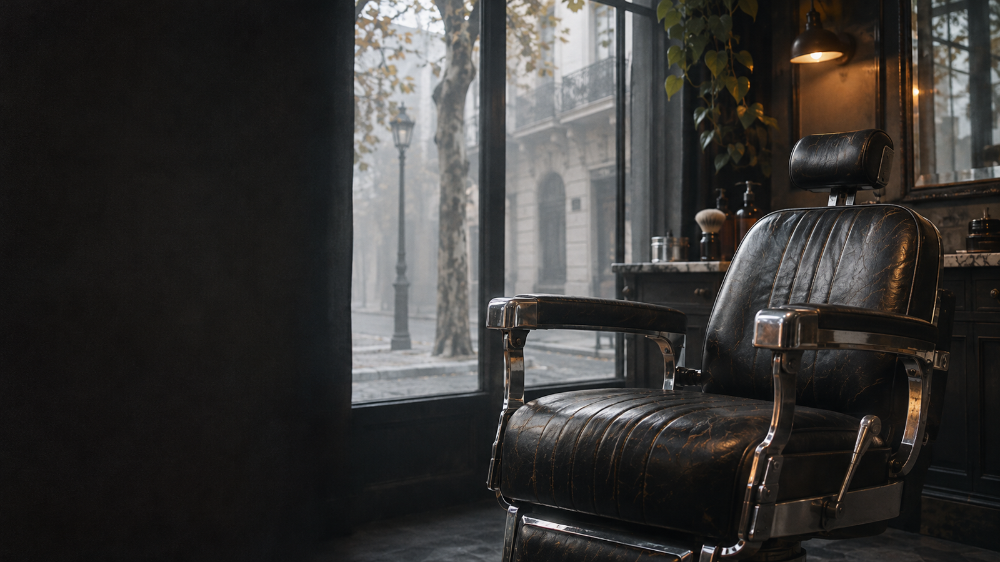

VILLA URQUIZA, BUENOS AIRES
AFUERA, RUIDO.
ACÁ, BRUMA.
Bajá un cambio. Sentate.
El buen corte empieza por tomarse el tiempo.
Cortes clásicos · Fades · Barba
OFICIO DE BARRIO. CORTE BIEN HECHO.↓
El oficio, sin vueltas
EL DETALLE
HACE EL CORTE.
Una transición limpia. La nuca prolija. El largo justo. Nos gusta esa barbería que se toma el trabajo de mirar antes de prender la máquina.
Encontrá tu próximo corte ↗
EN EL SILLÓN
Todos los servicios ↗Corte & fade
Tu estilo, bien definido.
↗02Barba
Forma, contorno y equilibrio.
↗03Corte + barba
Todo en su lugar.
↗